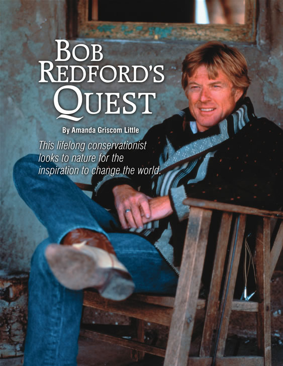
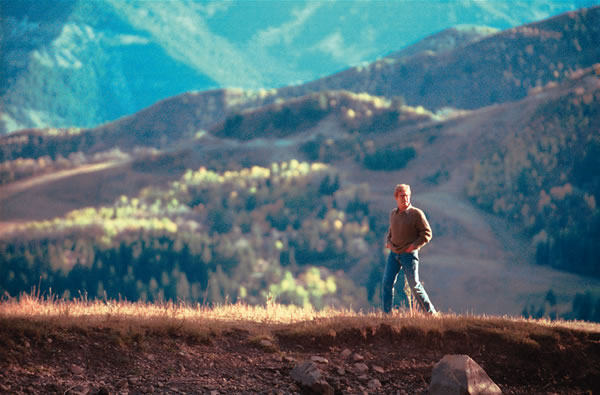

When Robert Redford was 29 years old and making his debut on Broadway, he couldn’t shake his longing for a wilderness retreat from the hustle of New York City. Having grown up in a working-class neighborhood in Southern California, Redford had come to know nature as his way out, “a release from chaos and confinement, an incredible liftoff.” On a whim, young Redford trekked into rural Utah and bought a two-acre plot in the Wasatch Mountains, shelling out his entire net worth, $500, for the land.
Now, Redford is 68 years old and over the years his investment has grown into almost 5,000 acres. At its center is a scenically spectacular and sustainable resort named after the Sundance Kid, his role as the sidekick to Paul Newman’s Butch Cassidy in the classic 1969 film.
One afternoon last summer, Redford dismounted his horse and strolled the cobblestone paths of Sundance Village toward the Tree Room, a rustic restaurant at the heart of the resort. Sporting weathered blue jeans, cowboy boots and a slightly bowlegged swagger, he looked like he was en route to meet Wyatt Earp and Doc Holliday at the OK Corral. In fact, he was headed to a meeting with former Vice President Al Gore, New Mexico Gov. Bill Richardson and dozens of mayors from across the United States who had convened at Redford’s invitation.
Just before entering the dining hall-a beautiful wood-paneled room with an ancient oak tree growing up through the center and floor-to-ceiling windows-Redford walked past a passage inscribed on the wall:
This place in the mountains,
amid nature’s casualness toward death
and birth,
is the perfect host for the inspiration of ideas:
harsh at times, life-threatening in its winters of destruction,
but tender in attention to the details
of every petal of every wildflower resurrected in the spring.
Nature and creativity obey the same laws,
to the same end: life.
The words are Redford’s own-something he scrawled in his journal years ago. “I was a bit self-conscious about putting that on the wall,” he winces. “I thought maybe it was corny, or grandiose. But my kids found it and thought it was important, so I got out-voted.”
CULTIVATING INNOVATION
Decades after founding Sundance, Redford has racked up an impressive resume: He has appeared in 34 films, directed six and produced 25. He has been nominated for several Oscars, winning one for directing Ordinary People and a second as a lifetime achievement award. His lesser-known achievements include extensive work that helped pave the way for important environmental laws, including those that make clean air and water a right for every American.
Redford also has developed Sundance-both the resort and its extensions-with foresight and a philanthropic spirit. The Sundance brand represents a broad suite of entities: the Sundance Film Festival, which has become synonymous with independent cinema; the cable channel and DVD/videotape line that distributes independent films; the nonprofit Sundance Institute that produces both the film festival and year-round programs for emerging artists; and the place itself-where the programs are held and where about 500,000 people visit each year to use its hiking trails, ski slopes and other amenities.
|
 FRED HAYES; LEFT: JEAN PAGLIUSO/CORBIS OUTLINE Robert Redford takes in the scenery of Sundance, Utah, which he describes as a refuge for artistic freethinking and political innovation. |
 peter l. gould/images Above: Robert Redford engages with filmmaker Andrew Dosunmu at the Sundance Institute. Top: May 1978-Redford gives a speech at the United Nations Plaza in New York to promote solar energy. |
FRED HAYES |
|
|
|
|